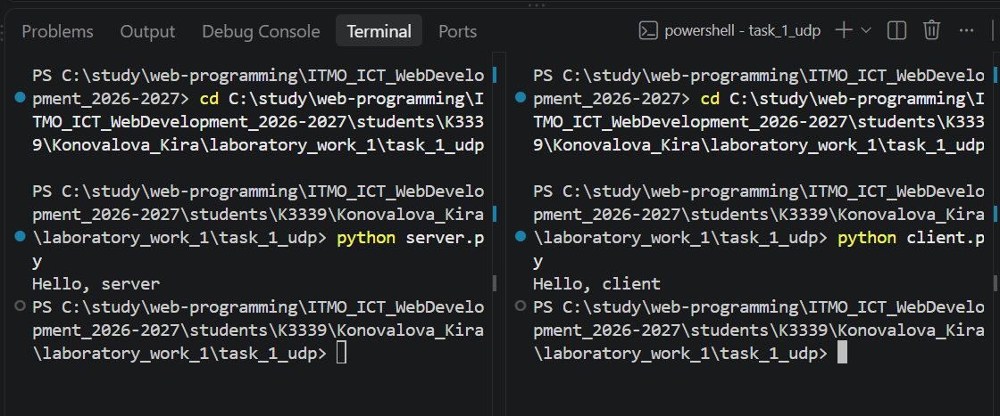
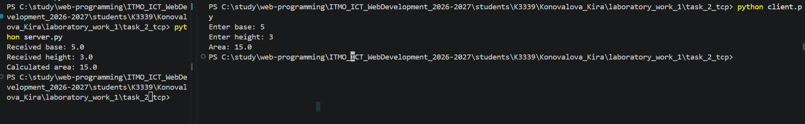
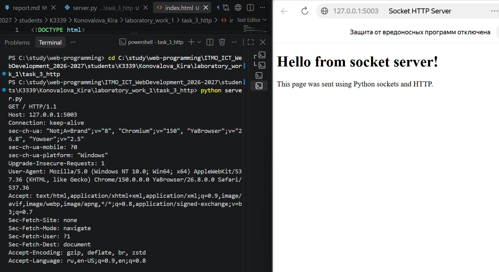
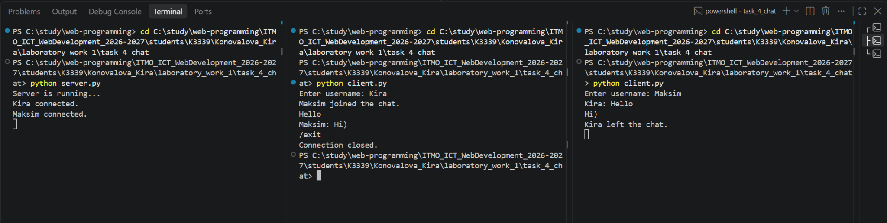
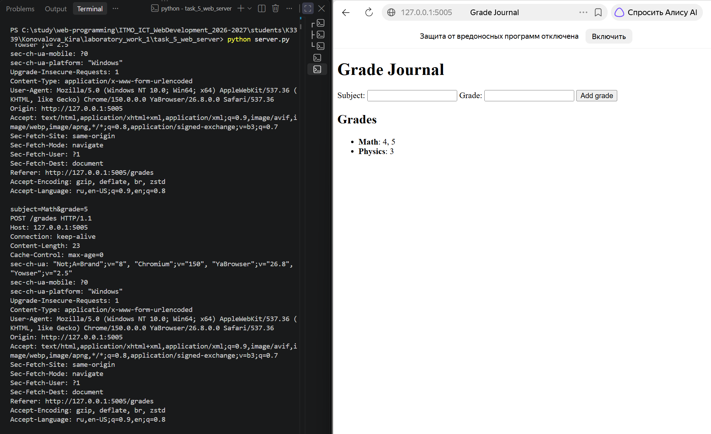

Лабораторная работа №1. Работа с сокетами
Цель работы
Понять принципы межсокетного взаимодействия в вебе и научиться реализовывать базовую клиент-серверную архитектуру
Задание 1. Обмен сообщениями по UDP
Описание
В первом задании реализовано клиент-серверное взаимодействие с использованием библиотеки socket и протокола UDP
UDP (User Datagram Protocol) — протокол без установления соединения. Перед отправкой данных клиент и сервер не устанавливают постоянное соединение друг с другом. Клиент отправляет отдельную датаграмму на IP-адрес и порт сервера, а сервер получает её и отправляет ответ на адрес клиента
Для взаимодействия используются:
- IP-адрес
127.0.0.1— локальный адрес компьютера (localhost) - порт
5001 AF_INET— использование IPv4SOCK_DGRAM— использование протокола UDP
Серверная часть
Сервер создаёт UDP-сокет и связывает его с локальным IP-адресом и портом с помощью метода bind() (закрепляет сервер за IP и портом)
После этого сервер ожидает входящее сообщение методом recvfrom(). Метод возвращает полученные данные и адрес клиента. Полученные данные передаются в виде байтов, поэтому для получения строки используется метод decode()
После получения сообщения сервер отправляет клиенту ответ Hello, client методом sendto()
Код сервера:
import socket
server_socket = socket.socket(socket.AF_INET, socket.SOCK_DGRAM)
server_address = ("127.0.0.1", 5000)
server_socket.bind(server_address)
data, client_address = server_socket.recvfrom(1024)
message = data.decode()
print(message)
response = "Hello, client"
server_socket.sendto(response.encode(), client_address)
server_socket.close()
Клиентская часть
Клиент также создаёт UDP-сокет с использованием AF_INET и SOCK_DGRAM
Сообщение Hello, server преобразуется из строки в байты методом encode() и отправляется серверу методом sendto()
После отправки клиент ожидает ответ сервера с помощью recvfrom(). Полученные байты преобразуются обратно в строку методом decode() и выводятся в терминал
Код клиента:
import socket
client_socket = socket.socket(socket.AF_INET, socket.SOCK_DGRAM)
server_address = ("127.0.0.1", 5000)
message = "Hello, server"
client_socket.sendto(message.encode(), server_address)
data, server_address = client_socket.recvfrom(1024)
response = data.decode()
print(response)
client_socket.close()
Результат выполнения
Сначала был запущен сервер, который ожидал входящее UDP-сообщение. После запуска клиента сообщение Hello, server было отправлено серверу и отображено в его терминале
В ответ сервер отправил сообщение Hello, client, которое было получено и отображено в терминале клиента

Таким образом, клиент и сервер успешно обменялись сообщениями с использованием протокола UDP
Задание 2. Вычисления через TCP
Описание
Во втором задании реализовано клиент-серверное приложение с использованием протокола TCP. Клиент вводит параметры математической операции и отправляет их серверу. Сервер выполняет вычисление и возвращает результат клиенту
В соответствии с номером в журнале был выбран вариант 4 вычисление площади параллелограмма
Площадь параллелограмма вычисляется по формуле:
S = a * h
где:
a— длина основания параллелограмма;h— высота;S— площадь параллелограмма.
Для взаимодействия использовались:
- IP-адрес
127.0.0.1— локальный адрес компьютера; - порт
5002; AF_INET— использование IPv4;SOCK_STREAM— использование протокола TCP.
В отличие от UDP, TCP предварительно устанавливает соединение между клиентом и сервером и обеспечивает надёжную передачу данных в правильном порядке
Серверная часть
Сервер создаёт TCP-сокет с использованием SOCK_STREAM, связывает его с локальным IP-адресом и портом методом bind(), после чего переводится в режим ожидания подключений с помощью listen()
Метод accept() принимает входящее соединение клиента и создаёт отдельный сокет для взаимодействия с ним
Полученные данные считываются методом recv(), преобразуются из байтов в строку методом decode() и разделяются на основание и высоту параллелограмма. После вычисления площади результат преобразуется в строку, кодируется в байты и отправляется клиенту методом send()
Код сервера:
import socket
server_socket = socket.socket(socket.AF_INET, socket.SOCK_STREAM)
server_address = ("127.0.0.1", 5002)
server_socket.bind(server_address)
server_socket.listen()
client_socket, client_address = server_socket.accept()
data = client_socket.recv(1024)
message = data.decode()
base, height = message.split()
base = float(base)
height = float(height)
area = base * height
print("Received base:", base)
print("Received height:", height)
print("Calculated area:", area)
client_socket.send(str(area).encode())
client_socket.close()
server_socket.close()
Клиентская часть
Клиент создаёт TCP-сокет и устанавливает соединение с сервером методом connect()
Пользователь вводит основание и высоту параллелограмма. Эти значения объединяются в одну строку, преобразуются в байты методом encode() и отправляются серверу
После выполнения вычисления сервером клиент получает результат методом recv(), преобразует его в строку и выводит в терминал
Код клиента:
import socket
client_socket = socket.socket(socket.AF_INET, socket.SOCK_STREAM)
server_address = ("127.0.0.1", 5002)
client_socket.connect(server_address)
base = input("Enter base: ")
height = input("Enter height: ")
message = base + " " + height
client_socket.send(message.encode())
data = client_socket.recv(1024)
print("Area:", data.decode())
client_socket.close()
Результат выполнения
Для проверки работы программы были введены следующие значения:
Основание: 5
Высота: 3
Сервер получил введённые параметры и вычислил площадь параллелограмма:
S = 5 * 3 = 15
Клиент получил от сервера результат 15.0

Задание 3. Раздача HTML-страницы по HTTP
Описание
В третьем задании реализован простой HTTP-сервер с использованием библиотеки socket
В качестве клиента используется браузер. При переходе по адресу http://127.0.0.1:5003 браузер устанавливает TCP-соединение с сервером и отправляет HTTP-запрос
Пример первой строки запроса:
GET / HTTP/1.1
Здесь:
GET— HTTP-метод для получения ресурса;/— путь к запрашиваемому ресурсу;HTTP/1.1— версия протокола HTTP.
Сервер получает запрос, читает HTML-страницу из файла index.html, формирует HTTP-ответ и отправляет его браузеру
HTTP-ответ состоит из строки статуса, заголовков, пустой строки и тела ответа
Схема взаимодействия:
HTML-страница
Содержимое страницы хранится в отдельном файле index.html
<!DOCTYPE html>
<html lang="en">
<head>
<meta charset="UTF-8">
<title>Socket HTTP Server</title>
</head>
<body>
<h1>Hello from socket server!</h1>
<p>This page was sent using Python sockets and HTTP.</p>
</body>
</html>
Серверная часть
Сервер создаёт TCP-сокет с помощью AF_INET и SOCK_STREAM, связывает его с локальным IP-адресом и портом методом bind() и начинает ожидать подключение методом listen()
После подключения браузера метод accept() принимает соединение и создаёт отдельный сокет для взаимодействия с клиентом
HTTP-запрос браузера принимается методом recv() и выводится в терминал
Затем сервер открывает файл index.html, считывает его содержимое и преобразует HTML-код в байты
Для корректного HTTP-ответа формируются следующие заголовки:
HTTP/1.1 200 OK— запрос успешно обработан;Content-Type: text/html; charset=utf-8— тело ответа содержит HTML-страницу в кодировке UTF-8;Content-Length— размер тела ответа в байтах.
Между HTTP-заголовками и телом ответа добавляется пустая строка
Код сервера:
import socket
server_socket = socket.socket(socket.AF_INET, socket.SOCK_STREAM)
server_address = ("127.0.0.1", 5003)
server_socket.bind(server_address)
server_socket.listen()
client_socket, client_address = server_socket.accept()
request = client_socket.recv(1024)
print(request.decode())
with open("index.html", "r", encoding="utf-8") as file:
html = file.read()
html_bytes = html.encode("utf-8")
content_length = len(html_bytes)
response_headers = (
"HTTP/1.1 200 OK\r\n"
"Content-Type: text/html; charset=utf-8\r\n"
f"Content-Length: {content_length}\r\n"
"\r\n"
)
response = response_headers.encode("utf-8") + html_bytes
client_socket.sendall(response)
client_socket.close()
server_socket.close()
Результат выполнения
Сервер был запущен на локальном адресе:
http://127.0.0.1:5003
После перехода по данному адресу браузер отправил серверу HTTP GET-запрос
В терминале сервера был получен запрос, содержащий строку:
GET / HTTP/1.1
Сервер загрузил содержимое файла index.html, сформировал HTTP-ответ и передал HTML-страницу браузеру
Браузер успешно отобразил полученную страницу

Задание 4. Чат на сокетах
Описание
В четвёртом задании реализован многопользовательский чат с использованием библиотеки socket, протокола TCP и библиотеки threading
В отличие от предыдущих заданий, сервер должен одновременно обслуживать несколько клиентов. Для этого каждое подключение обрабатывается в отдельном потоке
Пользователь запускает один и тот же файл клиента, вводит своё имя и после подключения может отправлять сообщения другим участникам чата
Сервер хранит активные клиентские подключения и имена пользователей, принимает сообщения от клиентов и рассылает их всем остальным участникам
Также реализована команда выхода из чата:
/exit
После выхода клиента его соединение закрывается, а остальные пользователи получают сообщение о том, что он покинул чат
Для работы использовались:
AF_INET— использование IPv4SOCK_STREAM— использование протокола TCPthreading— создание отдельных потоков для одновременной работы с несколькими клиентами- IP-адрес
127.0.0.1 - порт
5004
Использование потоков
Для реализации многопользовательского режима используется библиотека threading
Основной поток сервера продолжает ожидать новые подключения, а для каждого подключившегося клиента создаётся отдельный поток
Это позволяет серверу одновременно работать с несколькими пользователями
Схематично работа сервера выглядит следующим образом:
Основной поток сервера
|
|---- принимает Kira
| |
| └── отдельный поток Kira
|
|---- принимает Maksim
| |
| └── отдельный поток Maksim
|
└---- продолжает ждать новые подключения
Серверная часть
Сервер создаёт TCP-сокет, связывает его с IP-адресом и портом с помощью bind() и переводит в режим ожидания подключений методом listen()
Для хранения подключённых пользователей используются два списка:
clients = []
usernames = []
В список clients сохраняются клиентские сокеты, а в usernames — соответствующие им имена пользователей
Функция broadcast() используется для рассылки сообщения всем подключённым пользователям, кроме отправителя
Для каждого клиента создаётся отдельный поток, выполняющий функцию handle_client(). Она постоянно ожидает сообщения от конкретного пользователя и передаёт их другим участникам чата
При отключении пользователя его сокет и имя удаляются из списков, после чего остальные клиенты получают сообщение о выходе пользователя
Код сервера:
import socket
import threading
server_socket = socket.socket(socket.AF_INET, socket.SOCK_STREAM)
server_address = ("127.0.0.1", 5004)
server_socket.bind(server_address)
server_socket.listen()
clients = []
usernames = []
def broadcast(message, sender_socket):
for client in clients:
if client != sender_socket:
client.send(message)
def handle_client(client_socket):
while True:
try:
message = client_socket.recv(1024)
if not message:
break
broadcast(message, client_socket)
except:
break
if client_socket in clients:
index = clients.index(client_socket)
clients.remove(client_socket)
username = usernames[index]
usernames.remove(username)
client_socket.close()
leave_message = f"{username} left the chat.".encode()
broadcast(leave_message, client_socket)
def receive_clients():
while True:
client_socket, client_address = server_socket.accept()
client_socket.send("USERNAME".encode())
username = client_socket.recv(1024).decode()
clients.append(client_socket)
usernames.append(username)
print(f"{username} connected.")
join_message = f"{username} joined the chat.".encode()
broadcast(join_message, client_socket)
thread = threading.Thread(
target=handle_client,
args=(client_socket,)
)
thread.start()
print("Server is running...")
receive_clients()
Работа функции broadcast()
Функция:
def broadcast(message, sender_socket):
for client in clients:
if client != sender_socket:
client.send(message)
перебирает все активные клиентские подключения
Условие:
if client != sender_socket:
проверяет, что сообщение не отправляется обратно пользователю, который его написал
Обработка клиента
Функция:
handle_client()
работает в отдельном потоке для каждого подключённого клиента
В цикле:
message = client_socket.recv(1024)
сервер ожидает сообщения пользователя
Если данные получены, сообщение передаётся функции:
broadcast()
которая рассылает его другим клиентам
Если соединение закрывается или возникает ошибка, цикл завершается, пользователь удаляется из списка активных клиентов, а его сокет закрывается
Подключение новых пользователей
Функция:
receive_clients()
постоянно ожидает новые соединения методом:
server_socket.accept()
После подключения сервер отправляет клиенту специальное сообщение:
USERNAME
Клиент в ответ передаёт введённое пользователем имя
После этого сервер сохраняет сокет и имя:
clients.append(client_socket)
usernames.append(username)
и запускает новый поток:
thread = threading.Thread(
target=handle_client,
args=(client_socket,)
)
thread.start()
Таким образом, каждый клиент обрабатывается независимо от остальных пользователей
Клиентская часть
Клиент создаёт TCP-сокет и подключается к серверу методом connect()
После запуска пользователь вводит своё имя
Для клиента также используется отдельный поток. Он постоянно принимает сообщения от сервера, пока основной поток программы позволяет пользователю вводить новые сообщения
Если от сервера приходит сообщение:
USERNAME
клиент отправляет введённое имя пользователя
Все остальные сообщения выводятся в терминал
При вводе команды:
/exit
клиент закрывает соединение с сервером и завершает работу
Код клиента:
import socket
import threading
client_socket = socket.socket(socket.AF_INET, socket.SOCK_STREAM)
server_address = ("127.0.0.1", 5004)
client_socket.connect(server_address)
username = input("Enter username: ")
def receive_messages():
while True:
try:
message = client_socket.recv(1024).decode()
if message == "USERNAME":
client_socket.send(username.encode())
else:
print(message)
except:
print("Connection closed.")
client_socket.close()
break
def send_messages():
while True:
message = input()
if message == "/exit":
client_socket.close()
break
full_message = f"{username}: {message}"
client_socket.send(full_message.encode())
receive_thread = threading.Thread(target=receive_messages)
receive_thread.start()
send_messages()
Параллельная работа клиента
У клиента одновременно выполняются две задачи:
Основной поток
|
└── ввод и отправка сообщений
Дополнительный поток
|
└── получение сообщений от сервера
Функция:
send_messages()
позволяет пользователю вводить сообщения
Функция:
receive_messages()
работает в отдельном потоке и принимает сообщения от сервера
Благодаря этому клиент может получать новые сообщения, даже если пользователь в данный момент ничего не вводит
Результат выполнения
Для проверки многопользовательского режима были запущены один сервер и два экземпляра одного и того же клиентского приложения

Таким образом, был реализован многопользовательский TCP-чат. Один сервер одновременно обслуживает несколько клиентов с помощью потоков, пользователи идентифицируются по имени, могут обмениваться сообщениями и корректно выходить из чата
Задание 5. Простой веб-сервер с GET и POST
Описание
В пятом задании реализован простой веб-сервер с использованием библиотеки socket, который вручную обрабатывает HTTP-запросы методов GET и POST
Сервер позволяет:
- добавлять оценку по дисциплине с помощью POST-запроса
- хранить несколько оценок для одной дисциплины
- группировать оценки по названию предмета
- получать HTML-страницу со всеми сохранёнными оценками с помощью GET-запроса
Для взаимодействия используется браузер
Сервер запущен по адресу:
http://127.0.0.1:5005
Для хранения оценок используется словарь Python
Пример структуры данных:
{
"Math": [4, 5],
"Physics": [3]
}
Таким образом, каждая дисциплина хранится один раз, а её оценки находятся в отдельном списке
Методы GET и POST
Метод GET используется для получения данных с сервера
Обработка формы
HTML-страница содержит форму:
<form method="POST" action="/grades">
<label>Subject:</label>
<input type="text" name="subject" required>
<label>Grade:</label>
<input type="number" name="grade" required>
<button type="submit">Add grade</button>
</form>
Атрибут:
method="POST"
указывает, что данные формы отправляются с помощью метода POST
Атрибут:
action="/grades"
задаёт путь, на который отправляется запрос
Поля:
name="subject"
и:
name="grade"
определяют имена параметров, которые затем передаются серверу
Хранение оценок
В начале программы создаётся словарь:
grades = {}
При получении новой оценки сервер проверяет, существует ли уже такая дисциплина:
if subject in grades:
grades[subject].append(grade)
else:
grades[subject] = [grade]
Если предмет уже присутствует в словаре, новая оценка добавляется в существующий список
Если предмет встречается впервые, создаётся новая запись со списком, содержащим первую оценку
Это позволяет сгруппировать несколько оценок по одной дисциплине
Формирование HTML-страницы
Для построения страницы используется функция create_html()
Она перебирает содержимое словаря grades и создаёт HTML-элементы для каждого предмета
for subject, subject_grades in grades.items():
grades_text = ", ".join(str(grade) for grade in subject_grades)
grades_html += f"<li><strong>{subject}</strong>: {grades_text}</li>"
Список числовых оценок преобразуется в строку, после чего добавляется на HTML-страницу
Если журнал пока пуст, выводится сообщение:
No grades yet
Разбор HTTP-запроса
Полученный от браузера запрос преобразуется из байтов в строку:
request = client_socket.recv(4096).decode("utf-8")
Первая строка HTTP-запроса извлекается следующим образом:
request_line = request.split("\r\n")[0]
После разделения строки получаются:
method, path, version = request_line.split()
Например, для запроса:
POST /grades HTTP/1.1
значения будут:
method = POST
path = /grades
version = HTTP/1.1
Обработка POST-запроса
Если сервер получает:
POST /grades
тело HTTP-запроса отделяется от заголовков:
body = request.split("\r\n\r\n", 1)[1]
Для разбора данных формы используется функция:
parse_qs()
из стандартного модуля:
urllib.parse
Код обработки:
form_data = parse_qs(body)
subject = form_data["subject"][0]
grade = int(form_data["grade"][0])
После этого название предмета и оценка сохраняются в словаре
Формирование HTTP-ответа
После обработки запроса создаётся HTML-страница:
html = create_html()
html_bytes = html.encode("utf-8")
Затем формируются HTTP-заголовки:
response_headers = (
"HTTP/1.1 200 OK\r\n"
"Content-Type: text/html; charset=utf-8\r\n"
f"Content-Length: {len(html_bytes)}\r\n"
"Connection: close\r\n"
"\r\n"
)
Заголовок:
HTTP/1.1 200 OK
сообщает браузеру, что запрос был успешно обработан
Content-Type сообщает, что тело ответа содержит HTML
Content-Length содержит размер тела HTTP-ответа в байтах
Connection: close сообщает, что соединение будет закрыто после отправки ответа
После этого заголовки и HTML объединяются и передаются клиенту:
response = response_headers.encode("utf-8") + html_bytes
client_socket.sendall(response)
Серверная часть
Полный код сервера:
import socket
from urllib.parse import parse_qs
grades = {}
def create_html():
grades_html = ""
for subject, subject_grades in grades.items():
grades_text = ", ".join(str(grade) for grade in subject_grades)
grades_html += f"<li><strong>{subject}</strong>: {grades_text}</li>"
if not grades_html:
grades_html = "<li>No grades yet</li>"
return f"""
<!DOCTYPE html>
<html lang="en">
<head>
<meta charset="UTF-8">
<title>Grade Journal</title>
</head>
<body>
<h1>Grade Journal</h1>
<form method="POST" action="/grades">
<label>Subject:</label>
<input type="text" name="subject" required>
<label>Grade:</label>
<input type="number" name="grade" required>
<button type="submit">Add grade</button>
</form>
<h2>Grades</h2>
<ul>
{grades_html}
</ul>
</body>
</html>
"""
server_socket = socket.socket(socket.AF_INET, socket.SOCK_STREAM)
server_address = ("127.0.0.1", 5005)
server_socket.bind(server_address)
server_socket.listen()
print("Server is running at http://127.0.0.1:5005")
while True:
client_socket, client_address = server_socket.accept()
request = client_socket.recv(4096).decode("utf-8")
if not request:
client_socket.close()
continue
print(request)
request_line = request.split("\r\n")[0]
method, path, version = request_line.split()
if method == "POST" and path == "/grades":
body = request.split("\r\n\r\n", 1)[1]
form_data = parse_qs(body)
subject = form_data["subject"][0]
grade = int(form_data["grade"][0])
if subject in grades:
grades[subject].append(grade)
else:
grades[subject] = [grade]
html = create_html()
html_bytes = html.encode("utf-8")
response_headers = (
"HTTP/1.1 200 OK\r\n"
"Content-Type: text/html; charset=utf-8\r\n"
f"Content-Length: {len(html_bytes)}\r\n"
"Connection: close\r\n"
"\r\n"
)
response = response_headers.encode("utf-8") + html_bytes
client_socket.sendall(response)
client_socket.close()
Результат выполнения
Для проверки работы сервера были добавлены следующие оценки:
Math → 4
Math → 5
Physics → 3
В результате сервер сохранил оценки с группировкой по предметам:
Math: 4, 5
Physics: 3
На стороне сервера также отображаются полученные HTTP POST-запросы. В частности, в теле запроса можно увидеть передаваемые данные
Браузер после обработки запроса получает обновлённую HTML-страницу с текущим содержимым журнала

Вывод
В результате лабораторной работы удалось на практике разобраться в основных принципах работы сокетов, различиях UDP и TCP, структуре HTTP-запросов и ответов, а также в базовых принципах построения клиент-серверных приложений